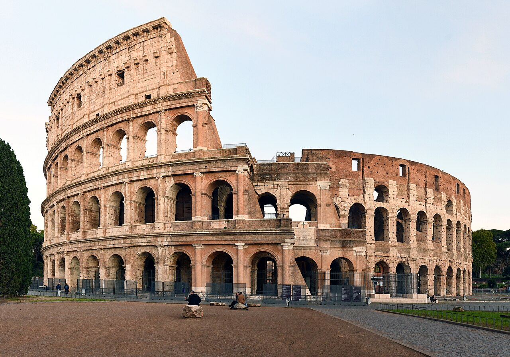

Located just east of the Roman Forum, the massive stone amphitheater known as the Colosseum was commissioned around A.D. 70-72 by Emperor Vespasian of the Flavian dynasty as a gift to the Roman people. In A.D. 80, Vespasian’s son Titus opened the Colosseum—officially known as the Flavian Amphitheater—with 100 days of games, including gladiatorial combats and wild animal fights.
After four centuries of active use, the magnificent arena fell into neglect, and up until the 18th century it was used as a source of building materials. Though two-thirds of the original Colosseum has been destroyed over time, the amphitheater remains a popular tourist destination, as well as an iconic symbol of Rome and its long, tumultuous history.